1. Raspberry固件准备
1.1 固件下载
选择了OpenWrt的子分支ImmortalWrt，理由是国内操作比较方便，内置了一些常用的插件。
下载地址：https://firmware-selector.immortalwrt.org/
页面中的设备，我选择了3B+的32Bits版本，目前的最新版本。
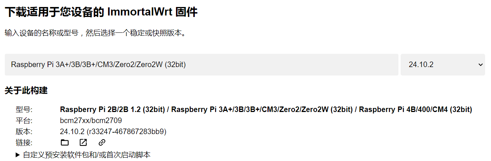
由于是首次刷入，选择了Factory版本
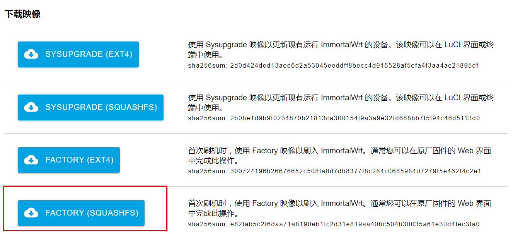
使用raspberry官方的烧录器刷入镜像
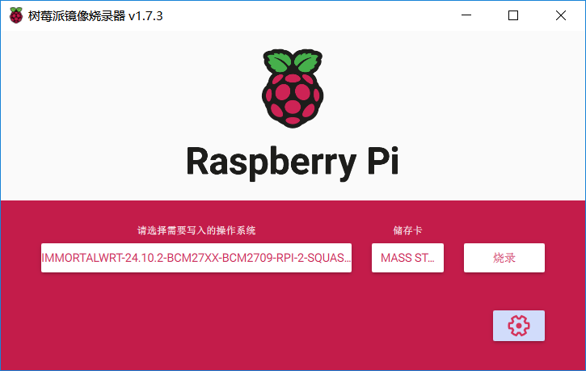
2. OpenWrt配置
2.1 关闭DHCP功能
树莓派开机以后，会建立一个名为"ImmortalWrt"，密码为空的热点，用PC或者手机连接。
登录时，账户root，密码password。
作为旁路网关，应该尽量减少原来网络的修改，它不应该负责dhcp分配，dhcp的工作还应该是主路由来负责。
所以，OpenWrt里先关闭DHCP服务：
系统 -> 接口 -> lan -> 编辑 -> DHCP服务器 -> 忽略此接口
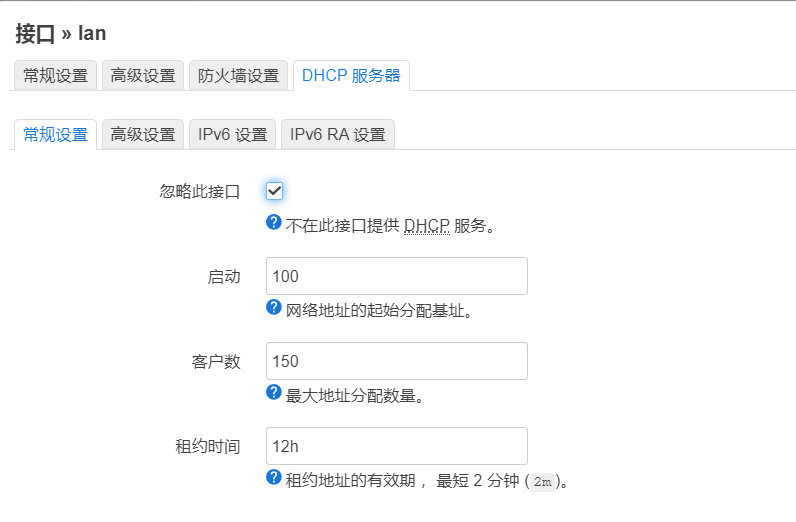
2.2 配置静态IP
系统 -> 接口 -> lan -> 编辑 -> 常规设置
协议应该是: 静态地址
旁路网关最好和主路由在同一个子网内，我的主路由是192.168.1.1。所以我把OpenWrt的设置如下：
- IPv4: 192.168.1.100
- IPv4网关: 192.168.1.1
- DNS服务器: 192.168.1.1（这个要设置一下，否则OpenWrt里边没法做解析）
这里IPv4的地址只要没被占用就可以。IPv4网关必须用主路由IP，因为OpenWrt处理后的数据，要流向主路由。
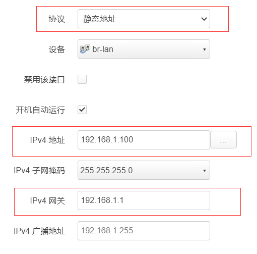
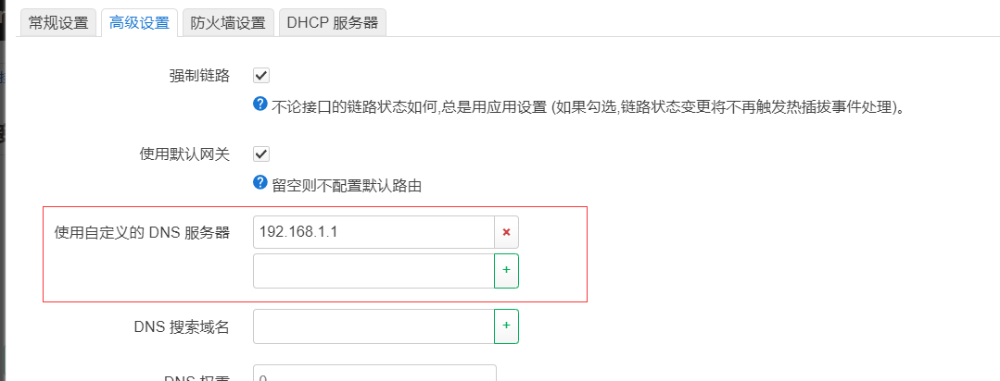
点击"保存并应用"，让配置生效。
此时，PC或者手机可以断开该wifi连接了（大概率自动断了），使用之前主路由的wifi即可。
2.3 禁用默认wifi
因为是作为旁路网关，不需要它的wifi功能，所以，直接禁用掉这个无线接口。
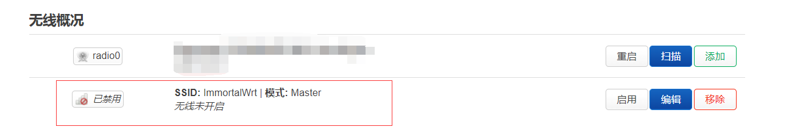
3. 扩容
3.1 为什么扩容
系统使用的是在SquashFS版本，在这个版本中，文件系统是只读的。那么怎么做到保存配置和安装插件呢？答案就是OverLay。
在SquashFS + Overlay方案中，可写的配置文件和各种插件，其实并非安装到系统目录中，而是写到了OverLay目录下，然后通过系统路径的映射，找到存放在OverLay中的实际文件。
所以，OverLay分区的大小，决定了可安装插件的数量。
下边是默认的磁盘分配情况：
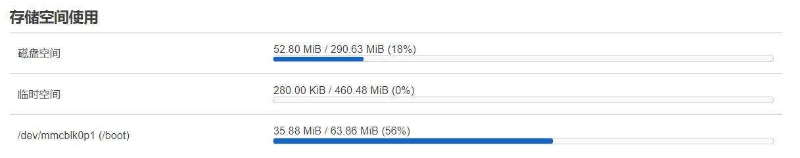
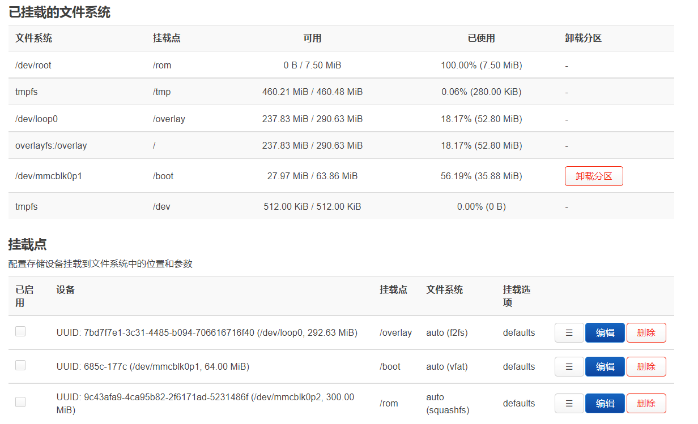
默认的OverLay分区只有大约300MB的大小，但是我树莓派使用SD卡是32GB的，很明显，绝大部分空间都浪费了。
3.2 扩容
使用SSH登录系统，安装磁盘管理工具cfdisk
opkg update
opkg install cfdisk
opkg的这两个操作都需要访问互联网，如果失败了，回去检查树莓派的DNS设置。
查看磁盘情况
cfdisk /dev/mmcblk0
/dev/mmcblk0 是树莓派上的SD卡设备
mmcblk0p1是SD卡上第一个分区
mmcblk0p2是SD卡上第二个分区
从OpenWrt中的磁盘使用情况可以看到:
mmcblk0p1挂载到了/bootmmcblk0p2挂载到了/rom
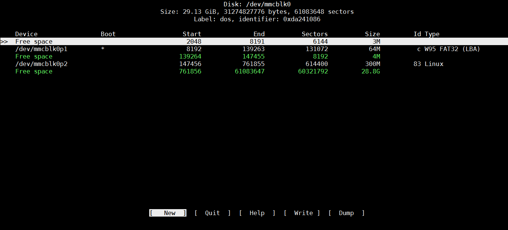
可以看到，在磁盘的最后有很大块的空间未使用。
在空闲空间上创建一个新的分区 mmcblk0p3
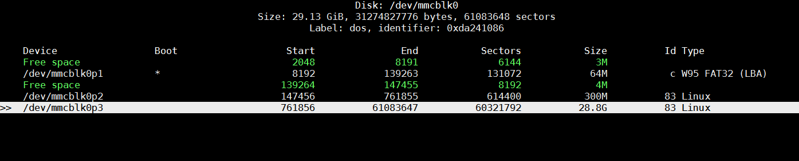
格式化该分区:
mkfs.ext4 /dev/mmcblk0p3
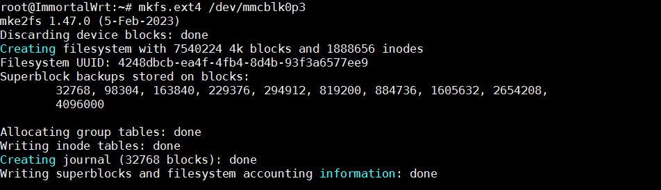
把分区挂载到系统中
mkdir /mnt/ex_overlay
mount /dev/mmcblk0p3 /mnt/ex_overlay
将原来的文件都copy到新的overlay中
cp -r /overlay/* /mnt/ex_overlay
文件拷贝完成以后，就可以取消掉这个挂载点了，用不到了。
unmount /mnt/ex_overlay
到OpenWrt中 系统 -> 挂载点 -> 添加
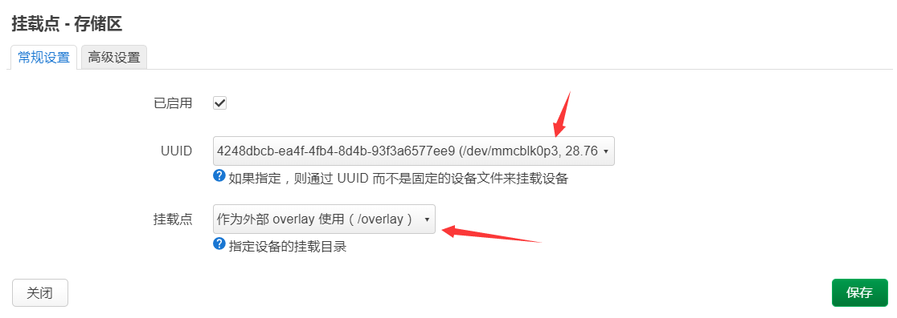
然后保存并应用。
重启即可，可以看到ImmortalWrt中自带的插件都还在。
4. 其他设置
- 美化ui可以安装
luci-theme-argon主题 - 由于工作在主路由器的后方，所以可以关闭SYN-flood防御功能。
- luci界面的ssh功能
luci-i18n-ttyd-zh-cn - 开启
clash以后，国内的下行流量也会经过旁路网关，但树莓派3b+的有线连接带宽受限于USB2.0，大约在300M。对于国内流量，这会成为带宽瓶颈，所以，在clash中开启“绕过xxxx”，下行的国内流量便会从主路由直接到达发起请求的设备。而其他路径都要经过树莓派。
树莓派终于不吃灰了。